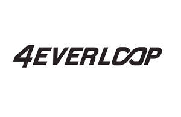

Trade Mark Journal No.2026/006 6 February 2026
UK00004327643 21 January 2026 (1,17,24,25,40)

International priority date claimed: 20 January 2026
(United States of America)
(99603621)
International priority date claimed: 29 August 2025
(United States of America)
(99366617)
- Class 1
- Chemical polymers; synthetic polymers; biodegradable polymer compositions; polymers for industrial use; thermoplastic compounds; polymer compositions, thermoplastic polymer resins, polyester resins, polyolefin resins, thermoplastic elastomer resins, and recycled polymer resins; Polymer compositions, thermoplastic polymer resins, polyester resins, polyolefin resins, thermoplastic elastomer resins, and recycled polymer resins for use in the manufacture of consumer goods; plastic compounds and polymer-based compositions for use in the manufacture of footwear, apparel, fashion accessories, hats, bags, backpacks, wristbands, charms and consumer goods; polymer-based compositions for use in the manufacture of commercial and domestic goods; unprocessed thermoplastics and polymer resins; viscous gel polymers in gel form for use in the manufacture of custom cushioned products; unprocessed thermoplastic resins; unprocessed thermoplastic resins combined with natural fibers; unprocessed thermoplastic compounds, thermoplastic elastomer resins, and thermoplastic concentrates for use in manufacturing in a wide variety of industries; unprocessed polymers.
- Class 17
- Rubber; recycled rubber; synthetic rubber; recycled plastics; semi-processed thermoplastics; Thermoplastic foams; synthetic rubber and elastomeric materials and compounds; thermoplastic foams for use in the manufacture of footwear, namely, uppers, midsoles, insoles, and outsoles; thermoplastic materials and synthetic rubber for use in the manufacture of footwear, fashion accessories, hats, bags, backpacks, wristbands, charms, textile fabrics and materials for apparel, bags, luggage, backpacks, baggage tags, key rings, key chains, and charms; thermoplastic elastomer resins in pellet or extruded form for use in further manufacture; thermoplastic compounds, thermoplastic elastomer resins, and thermoplastic concentrates in pellet or extruded form for use in manufacturing in a wide variety of industries; semi-processed thermoplastics in the form of pellets, sheets, blocks, foams, rods, and profiles; polyester and polyolefin materials in the form of sheets, foams, and molded components; elastic rubber-like materials for use in the manufacture of clothing; vulcanized fiber; semi-finished synthetic plastics; recycled plastics in extruded and molded form; recycled plastics in the form of pellets, blocks, sheets, textile fabrics, yarns, and foams for use in further manufacture; recycled ester-based polymers, recycled thermoplastic polymers and elastomers, and recycled polyester elastomers for use in further manufacture.
- Class 24
- Fabric; woven fabrics; heat formable non-woven textile materials; textiles and textile goods; substitutes for textiles; recycled textiles; Synthetic textile fabrics; polyester fabrics; recycled polyester fabrics; technical and performance fabrics and textile fabrics; technical and performance fabrics and textile fabrics for use in the manufacture of footwear uppers, apparel, bags, and accessories; woven, knitted, and non-woven textile materials; composite fabrics containing thermoplastic fibers; fabrics coated with thermoplastic coatings for use in manufacturing in a wide variety of industries.
- Class 25
- Footwear; clothing; headwear; Footwear uppers; Insoles for footwear; Soles for footwear; Socks; Sweatshirts; Hooded sweatshirts; Sweaters; Vests; Outer jackets; Clothing jackets; Shirts and short-sleeved shirts; Tee shirts; Sports jerseys; Clothing jerseys; Pants; Shorts; Hats; Caps being headwear.
- Class 40
- Custom manufacturing of clothing, apparel, footwear, textiles, bags, fabric bags, accessories, swing tags, packaging, backpacks, and luggage to the order and specification of others; manufacturing services for others in the fields of clothing, apparel, footwear, textiles, bags, fabric bags, accessories, swing tags, packaging, backpacks, and luggage; custom manufacturing of plastic materials and polymer components; treatment and processing of thermoplastic material; treatment and processing of thermoplastic materials and material conversion services for the manufacture of footwear, clothing, apparel, and accessories; extrusion, compounding, molding, forming, injection foaming, and vulcanization of thermoplastic materials; recycling of clothing, apparel, textiles, bags, footwear, fabric bags, swing tags, packaging, backpacks, and luggage; recycling services; recycling of plastic and polymer materials; clothing recycling services for upcycling and reuse; upcycling of post-consumer and post-industrial plastics; rental of equipment for the treatment and transformation of materials for custom manufacturing; information, advice and consultancy services in relation to the foregoing.
ANIMA Inc.
Representative: D Young & Co LLP